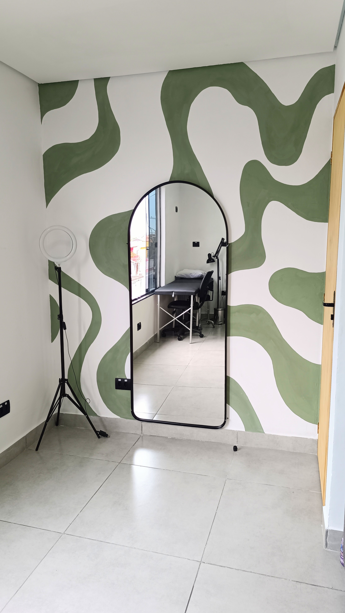
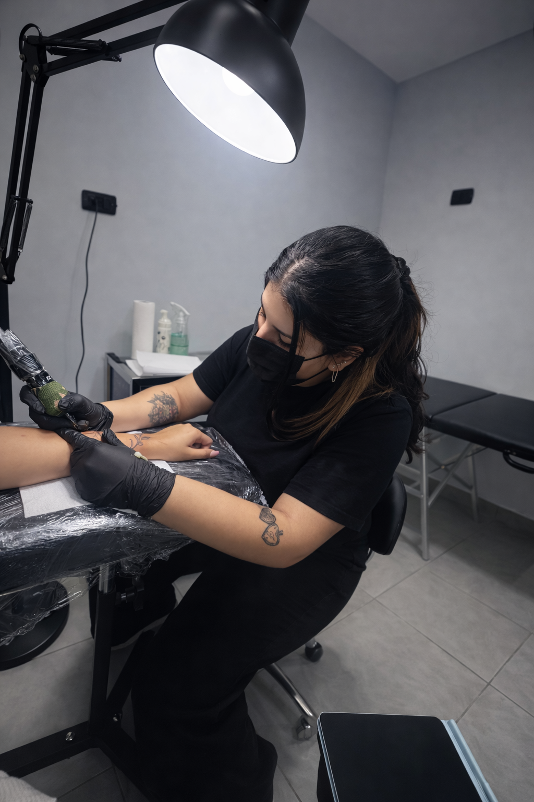

Anos de Estúdio
Santo André - SP
✦ Studio Privado em Santo André
✓ 100% Biossegurança & Autoral
Arte na pele, pensada especialmente para você.
Transformando ideias em tatuagens exclusivas com identidade, sensibilidade e técnica. Especialista em Old School, Blackwork, Fineline e Projetos Autorais.
3+
Anos de Trajetória Artística
100%
Materiais Cirúrgicos Descartáveis
Exclusivo
Atendimento Privado & Personalizado
Trabalhos Realizados
Galeria de Portfólio
Navegue pelos trabalhos recentes da artista. Cada arte expressa detalhes minuciosos, contraste apurado e aplicação anatômica perfeita.

3
Espaço & Conforto
Nosso Studio Privado
Um ambiente pensado em cada detalhe para proporcionar tranquilidade, privacidade e uma experiência acolhedora durante todo o procedimento.

Excelência Técnica e Biossegurança
Localizado em Santo André, o estúdio Bru Inktattoo opera em modelo de atendimento privativo com hora marcada, garantindo que você tenha 100% da atenção da artista durante a sua sessão.
Biossegurança Rigorosa
Agulhas, biqueiras e filmes plásticos descartáveis. Tintas 100%
originais certificadas pela Anvisa.
Ambiente Climatizado & Reservado
Música ambiente, poltrona anatômica ajustável e conforto para sessões
curtas ou longas.
Criação Colaborativa
Ajustamos tamanho, proporção e posicionamento no decalque com calma
até você se apaixonar pelo projeto.
Guia Prático
Dicas para sua Tatuagem
Como escolher o tema, estilo e posicionamento ideal para sua próxima arte corporal.
Conceito & Ciência
O que é uma Tatuagem?
Como Funciona o Processo:
1. Desenho & Stencil
Decalque anatômico e ajuste perfeito no corpo.
2. Aplicação do Pigmento
Deposição precisa na derme por microagulhas.
3. Cicatrização & Fixação
Renovação epidérmica e fixação permanente do tom.
Saúde da Pele
Como Cuidar da sua Tattoo
O resultado final impecável depende de cuidados essenciais antes, durante e depois da sua sessão.
Marcas & Fornecedores
Nossos Parceiros Oficiais
Trabalhamos exclusivamente com marcas consagradas de pigmentos, insumos cirúrgicos e cultura streetwear.
Atendimento & Orçamento
Solicite seu Agendamento
Preencha os 4 campos abaixo para enviar sua solicitação diretamente para o nosso sistema no Notion. A tatuadora Bruna entrará em contato para confirmar horário e detalhes.